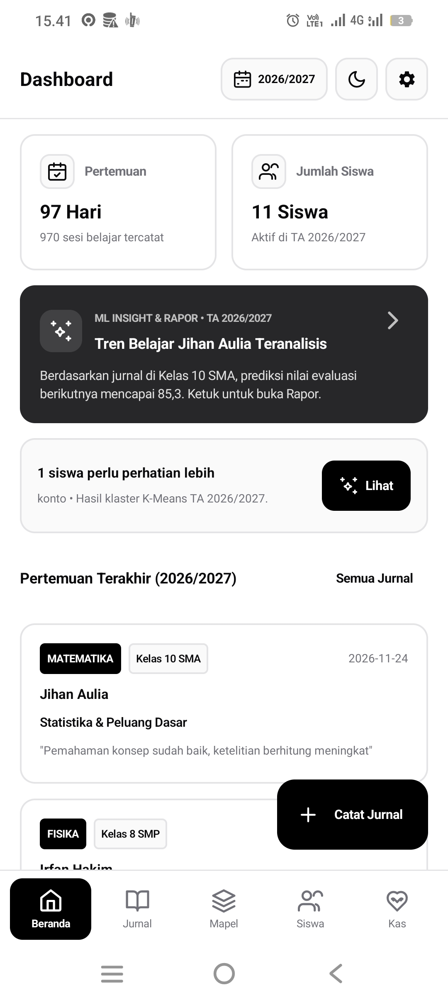

Catat perkembangan belajar siswa, analisis dan prediksi performa siswa secara otomatis berbasis Machine Learning, kelola kas les privat, hingga cetak rapor PDF & kirim langsung ke WhatsApp wali murid.
Tanpa iklan, tanpa langganan, dan 100% data tersimpan aman secara lokal di perangkat Anda.
Catat topik pertemuan, nilai evaluasi, dan tingkat pemahaman siswa tiap sesi berdasarkan Tahun Ajaran aktif.
Pemetaan klaster belajar siswa dan prediksi tren nilai otomatis untuk mendeteksi materi yang perlu penguatan.
Ekspor laporan perkembangan ke dokumen PDF siap cetak atau kirim ringkasan nilai langsung ke WhatsApp orang tua.
Rekap pemasukan sedekah/apresiasi murid dan pengeluaran operasional mengajar per bulan atau per tahun ajaran secara transparan dan rapi.
Ekspor dan impor file database .db kapan saja saat berganti perangkat.
Dibangun native menggunakan Jetpack Compose dengan palet monokrom yang menjaga mata tetap fokus saat merekap nilai.

Klik tombol Download Meowmo di halaman ini untuk mengunduh file meowmo-v1.0.0-release.apk ke perangkat Android Anda.
Buka file APK dari notifikasi browser atau File Manager. Jika diminta, aktifkan opsi "Izinkan dari sumber ini".
Eksplorasi fitur dengan data simulasi bawaan, lalu buka Pengaturan → Zona Reset untuk mulai mencatat data asli Anda.
Tidak. Seluruh pencatatan jurnal, analisis Machine Learning, pembuatan PDF, dan database SQLite berjalan 100% offline di HP Anda. Internet hanya dibutuhkan saat mengirim rapor ke WhatsApp.
Buka menu Pengaturan (ikon gir) lalu pilih Ekspor Database SQLite untuk menyimpan file .db. Di perangkat baru, cukup pilih Impor Database SQLite.
Ya, Meowmo dapat digunakan sepenuhnya secara gratis tanpa batas jumlah siswa maupun jurnal.